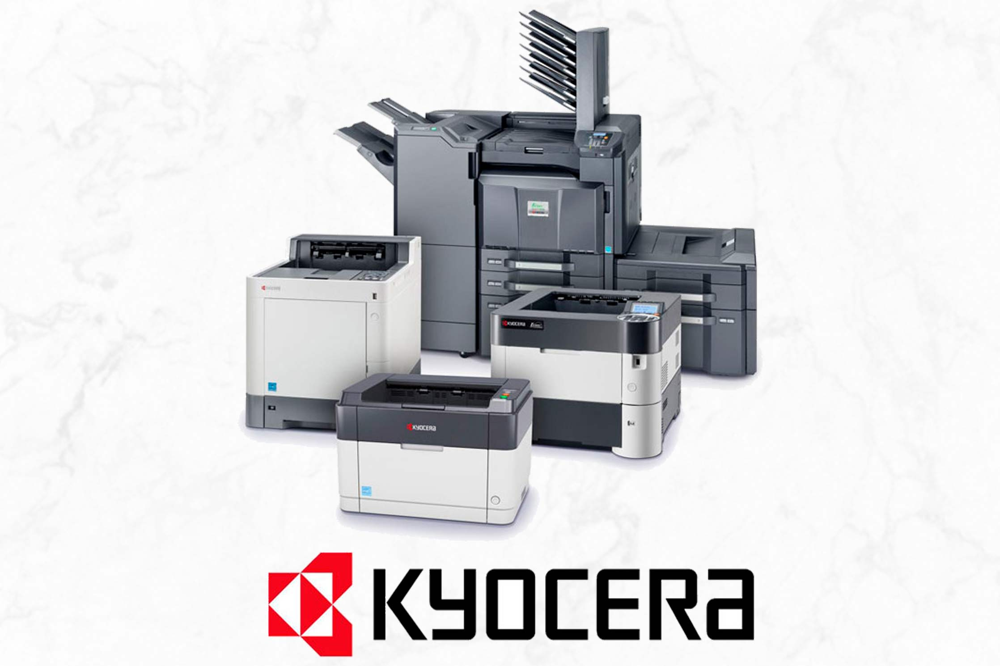

La vida de Kazuo Inamori

Kazuo Inamori es un empresario japonés nacido el 11 de enero de 1932 en Kagoshima, Japón. Es reconocido por su notable éxito como fundador de dos compañías prominentes: Kyocera Corporation y la empresa de telecomunicaciones KDDI Corporation. Su vida ha estado marcada por su visión empresarial, filosofía única de gestión y contribuciones al mundo de los negocios y la filantropía. Inamori se graduó en ingeniería cerámica de la Universidad Técnica de Kagoshima. En 1959, fundó Kyoto Ceramic Co., Ltd., que más tarde se convertiría en Kyocera Corporation. Comenzó produciendo componentes de cerámica y posteriormente incursionó en la fabricación de productos electrónicos, como impresoras y dispositivos de telecomunicaciones. Su enfoque en la innovación tecnológica, combinado con su filosofía de gestión única, permitió el crecimiento y el éxito de Kyocera a nivel mundial. Inamori también desempeñó un papel fundamental en el establecimiento y desarrollo de KDDI Corporation, una importante empresa japonesa de telecomunicaciones. Además, fundó otra empresa exitosa, DDI Corporation, que más tarde se fusionó con KDD y IDO para formar KDDI. Lo que distingue a Kazuo Inamori no son solo sus logros empresariales, sino también su filosofía empresarial basada en principios éticos y humanísticos. Él introdujo el concepto de "Amo a las personas, use las cosas" como una filosofía de gestión, colocando la importancia de las relaciones humanas por encima del materialismo. Inamori también es conocido por su filantropía y su dedicación a la educación. En 1984, estableció la Inamori Foundation, una organización que otorga el prestigioso Premio Kyoto a contribuciones sobresalientes en los campos de la ciencia y la filosofía. Además, fundó la Universidad de Kyocera, una institución de educación superior que se enfoca en la formación de líderes empresariales y científicos. A lo largo de los años, Kazuo Inamori ha sido reconocido con numerosos premios y honores, tanto por sus logros empresariales como por su compromiso con la ética y la filantropía. Su vida y trabajo continúan siendo una inspiración para empresarios y líderes en todo el mundo.
Las impresoras Kyocera tienen una historia fascinante que comienza en Japón en 1959. La compañía fue fundada por Kazuo Inamori y comenzó como Kyoto Ceramic Co., Ltd., una empresa que se centraba en la producción de productos cerámicos finos. Sin embargo, la innovación pronto condujo a una nueva dirección para la empresa. En la década de 1970, Kyocera se aventuró en el mercado de las impresoras y copiadoras. Su enfoque se centraba en la tecnología láser, y en 1982 lanzaron su primera impresora láser, revolucionando el mercado con su enfoque innovador. Kyocera fue pionera en el uso de componentes cerámicos para sus impresoras y cartuchos, aprovechando su experiencia en este campo. Sus cartuchos de tóner cerámico ofrecían una mayor durabilidad y confiabilidad en comparación con los cartuchos tradicionales. Esta innovación no solo mejoró la calidad de impresión, sino que también redujo el desperdicio al ser más duraderos y resistentes.
A lo largo de los años, Kyocera continuó desarrollando nuevas tecnologías para sus impresoras, centrándose en la eficiencia energética y la sostenibilidad. Introdujeron sistemas de impresión más rápidos, eficientes y respetuosos con el medio ambiente, lo que les valió reconocimiento en la industria. La compañía se esforzó por integrar la última tecnología en sus dispositivos, desde funciones de impresión inalámbrica hasta soluciones avanzadas de gestión de documentos. Su enfoque en la durabilidad y la calidad se convirtió en un sello distintivo de la marca Kyocera. Hoy en día, las impresoras Kyocera son conocidas por su fiabilidad, eficiencia y enfoque en la sostenibilidad. Han logrado establecerse como una de las principales marcas en el mundo de la impresión, combinando su experiencia en cerámica con la vanguardia de la tecnología para ofrecer productos que satisfacen las demandas tanto de usuarios individuales como de empresas.